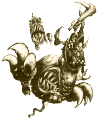
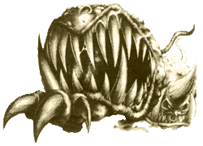
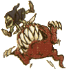

| |
Éjgoblin
Squigpásztorok
Sok-sok évvel
ezelõtt, néhány goblin törzs tanyát ütött a
Világvége hegység barlangjaiban. Szokásaik
megváltoztak, külön fajjá nõtték ki magukat,
nappali fényt kerülõ életvitelük miatt. Õk
lettek az éjgoblinok. Hétköznapjaikat
gombatermesztéssel töltik, mégis gyakran
tesznek kirán dulásokat ismeretlen tárnákba,
hogy újabb egzotikus, vadon növõ gombafélékre
tegyenek szert. Ezen felfedezõ utak gyakran érnek
drámai véget, mivel a barlangokat nem csak a
goblinok népesítik be...
| A
hegy gyomrában élõ teremtmények közül,
talán a Barlangi squigek a legveszélyesebbek.
Ezeknek az eltorzult lényeknek igen
furcsa a testfelépítése, tudniillik félig
húsból, félig gombá- ból áll a
szervezetük. Szívós gömbforma testüket
két otromba, karmos láb hordozza. Félelmetes
fogakkal teli szájukkal képe- sek egy
éjgoblint egészben lenyelni, vagy náluk
nagyobb lénye- ket kettészelni
egyetlen harapással. A goblinok az idõk
folya- mán megtanulták, hogyan fogják
el a squigeket, abból kifo- lyólag,
hogy a rabul ejtett fenevadakat remekül
lehet alkalmazni csatában. A vadászat
a következõképpen zajlik: Néhány éjgoblin
hosszú, hegyes vasvillával (vagy ahogy
õk nevezik, ösztökével) kihajtja a
squigeket a rejtekhelyükrõl és
sakkban tartják õket míg társaik hálót
nem dobnak rájuk. Ezután a dühös, de
cselekvésképtelen fenevadakat jókora
bunkókkal eszméletlenre verik, majd
elvonszolják. |
 |
A squigvadászok
fittyet hánynak a rájuk leselkedõ veszélyekre,
mivel imádják fitogtatni tudomá- nyukat.
Gyakran rendeznek versenyeket squigbirkózásból,
versenyfutásból és squigugratásból
A szörnyeket a
vasvillás vadászok terelik csatába. Mivel a
squigek nem szeretik a napfényt, hamar feldühödnek,
ingerlékennyé válnak, így a goblinoknak csak
annyi a dolguk, hogy az ellen- ség soraiba irányítják
a fogukat csattogtató "adrenalingolyókat".
Warhammer Fantasy Battle szabályok
a squigvadászokra vonatkozóan:
Mozgás
A squigvadász
osztag a squigekbõl és az ösztökével
felszerelt goblinokból áll. A Csata kezdet- ekor
az osztagnak minimum 3 squigbõl és 2 Vadászból
kell állnia. Bár a két faj mozgásértéke különbözõ,
az egész osztagnak a goblinok sebességével kell
haladnia.
Alakzat
Az osztag két
sorban mozog, az elsõ sort a squigek alkotják, a
másodikat a goblinok.
Kézitusa
A squigek
minden modellt megtámadnak, mellyel talapzatuk
kapcsolatba kerül. Szövetségest éppúgy, mint
ellenségest, kivéve a mögöttük haladó
vasvillásokat. A vadászok szintén megtá-
madhatnak ellenséges modelleket, ha talpazatuk érinti
az ellenfél talpazatát. Mivel a két goblin egy
mûanyag talpon helyezkedik el, mindketten támadhatnak,
ráadásul a talpazat bármely oldalán. Ha a szörny
már közelharcba bonyolódott egy ellenféllel, a
squigvadászok is bekapcso- lódhatnak a harcba mögülük,
a lándzsás osztagokhoz hasonló módon. (Lásd.
Warhammer Fantasy Battle Szabálykönyv) Mivel az
ösztöke igen nagy és nehéz szerszám, használói
+1 erõ- bónuszt kapnak. Bár a goblinok a
hátsó sorból küzdenek, akkor is használhatják
fegyverüket, ha mozognak (ellentétben a lándzsásokkal).
Lövés a
squigvadászokra
Mikor az
ellenség egy squigvadász osztagra lõ, a találatok
véletlenszerûen oszlanak meg a gobli- nok és a
squigek között. Például ha az osztag három
squigbõl és két goblinból ál, dobj egy D6-ot
és járj el az alábbiak szerint: Ha a kapott érték
1-3: squig sebesül, ha 4-5: goblint lõttél, ha
6 dobj újra. Ne feledd, hogy a vasvillát nem
egy, hanem két goblin viszi.
Akaraterõ
és Jellemvonások
Az egész
osztag a goblinok akaraterõ értékét használja.
A vadászokhoz persze minden további nélkül
csatlakozhat ork vagy goblin karakter, ilyen
esetekben az õ akaratereje dominál. A vezetõnek
alkalmazott karaktert célszerû az osztag mögött
biztonságba helyezni, mivel mint azt már tudjuk,
a squigek mindenkit megtámadnak...
Goblin áldozatok
Mivel a két
vadászgoblin egy talapzaton helyezkedik el,
jegyezd fel egy darab papírra, ha vala- melyikük
harcképtelenné válik, vagy helyettesítsd egy másik
goblin modellel. Az ösztökét egy goblin is
használhatja, viszont elveszti a fegyverre járó
+1 erõbónuszt, mivel egyedül kell cipelnie azt
a dögnehéz fegyvert, ebbõl adódóan célszerû
párosával eltávolítani a modelleket, minél több
ép párt hátrahagyva.
Félelem
A goblinok
nem szeretnek elfekkel harcolni, így ha nincsenek
legalább kétszeres túlerõben a hegyesfülûekkel
szemben, iszonyatos félelem lesz úrrá rajtuk.
(A félelemre vonatkozó szabályo- kat lásd. a
Warhammer Fantasy Battle szabálykönyvben.

Vad squigek
Míg a
goblinok a squigeket hajtják, azok egy egységként
harcolnak. Elõfordul azonban, hogy a hajcsárokat
elpusztítják, vagy elbuknak valamilyen pszihológiai
tesztet és menekülni kezdenek, rosszabb esetben
az is megeshet, hogy a squigek elszabadulnak.
Minden ösztökével max. 3 squiget lehet irányítani.
Ha nincs elég goblin a fegyver használatához, a
pluszt képezõ squigek megvadulnak (Pl.: Ha 2
vasvillás goblin marad és 8 squig, két szörny
irányíthatatlanná válik) Ha az összes hajcsár
elesik, az összes squig megvadul. A megvadult
squigek a "MOZGÁS" fázisban, a kényszermozgás
résznél mozoghatnak. Minden squig különálló
modellként mozog, mégpedig 2D6"-et véletlenszerû
irányba. A mozgás irányát a SZÓRÁSKOCKA dönti
el. Az össze-vissza ugráló szörnyek a saját
osztagukon kívül bárkit megtámadhatnak. Ha a
mozgás valamely osztag irányába veti a teremtményt,
az megrohamozza õket. megáll, majd közelharcba
kezd. A squig csak akkor folytatja az ugrabugrálást,
ha az ellenfelét már leküzdötte. Ne feledd,
hogy a squig a saját csapataidat is megtámadja,
ha a helyzet úgy hozza. A szörnyek immúnisak
mindennemû pszichológiai tesztre, így nem lehet
megfutamítani õket.
Warhammer Fantasy Battle
sereglista a Squigvadászokra vonatkozóan:
Egy vadászegység:
8 pont
Egy Squig:
20 pont
| |
M |
Ws |
Bs |
S |
T |
W |
I |
A |
Ld |
| Vadász |
4 |
2 |
3 |
3 |
3 |
1 |
2 |
1 |
5 |
| Squig |
2D6" |
4 |
0 |
5 |
3 |
1 |
5 |
2 |
2 |
A seregben
Éjgoblin osztagonként, egy Squigvadász osztagot
alkalmazhatsz. A Squigva- dász osztag minimum 5
modellbõl kell, hogy álljon.
Éjgoblin
Squiglovasok
Mint
már a fentiekben említettem a squigvadászok egy
eléggé nemtörõdöm népség. Így hajlamosak
figyelmen kívül hagyni a reájuk leselkedõ veszélyeket.
Szinte mindegyikük birtokol egy-egy borzalmas sérülést,
melyet szívesen meg is mutatnak az érdeklõdõknek.
Részeg squigvadászok imádnak vérfagyasztó (és
kissé eltúlzott) mesélni arról, hogy hogyan
tettek szert azon rettenetes sebekre.
A
goblinok legvakmerõbbjei vad squigek hátán
indulnak csatába, azok kicsiny szarvaiba, füleibe
kapaszkodva ugrabugrálnak a harcmezõn. (Jóesetben
az ellenség felé) A lovasok nem képesek
osztagokban harcolni, mivel a squigek a saját fejük
után mennek, szegény lovasokat pedig teljesen
leköti a kapaszkodásra irányuló megfeszített
koncentrálás. Természetesen azért akadnak képzettebb
squiglovasok, akik képesek valamilyen szinten irányítani
a szörnyeket, csatába inkább ezek bevetését
ajánljuk.
Warhammer Fantasy Battle szabályok
a Squiglovasokra vonatkozóan:
Mozgás
A squigek a
harcmezõn hatalmas ugrásokkal haladnak elõre,
az ugrások távolságát a vak véletlen dönti
el. A szörnyek a MOZGÁS fázis elején, a kényszermozgások
idején mozognak. Az éjgoblin Fanatikusokhoz
hasonlóan a squiglovasok is önálló modellként
mozoghatnak, mégpedig a következõképp: Miután
megjelölted az irányt, amerre a modellt szeretnéd
mozgatni, állapítsd meg az ugrás távolságát
2D6 kockadobással, majd helyezd át lovasaidat a
kapott értéknek megfelelõ távolságra, az általad
megjelölt irányba. Ha a két kockával egyforma
számot dobsz, a squig akkor is megugorja a távot,
viszont véletlenszerû irányba, melyet a SZÓRÁSKOCKÁVAL
határozhatsz meg. A squigek az osztagok fölött
is átugranak, így pontosan az elõbb leírtak
szerint járj el, ha elõtted egy ellenséges vagy
saját osztag, illetve modell áll. Abban az
esetben, ha pont egy modellen landol a lovas, a
squig azonnal megtámadja azt, majd tovaugrik. Újfent
nevezz meg egy irányt, majd mozgasd a modellt
mindaddig, míg a squig olyan helyre nem ugrik,
ahol nem tartózkodik ellenfél. Ha netán folyóban
vagy tóban landolnál, elsüllyedsz, mint egy
nyeletlen balta, és a squig lovasával együtt
megfullad. Ha a modell leugrik a csatatérrõl, az
ütközet folyamán már nem térhet vissza.
Pszichológia
|  |
A squig a szó
szoros értelmében ugrándozik össze-vissza.
Tulajdonképpen túl dühös ahhoz, hogy
bármiféle pszichológiai vagy akaraterõ
teszt hatással lenne rá. Ennek az, az
elõnye, hogy nem törik meg kézitusában,
és semmiféle teszt káros hatásának
nincs kitéve. Ami pedig a squig hátán
ülõ goblint illeti, kapaszkodik ahogy
csak tud... |
Harc
Amikor a
squig egy modellen landol, se szó, se beszéd
megharapja azt. A goblin is lesújthat fegyverével,
de ez persze nem kötelezõ, pláne, ha saját
modellünk valamelyikére ugrottunk. A squig és a
goblin automatikusan megüti a megtámadott figurát,
így a találat megállapításához nincs szükség
kockadobásra. A sebzést a szokott módon kell
megállapítani, a megtámadott modellek nem képesek
visszaütni, mivel úgy meg vannak lepve, hogy
szinte lélegzethez sem jutnak. Mint említettem
volt, a squig támadás után tovább ugrik.
A
Squiglovas megrohamozása
Az ellenséges
osztagok megrohamozhatják a squiglovasokat és közelharcba
bonyolódhatnak velük, amennyiben az osztag
lovassági modellekbõl áll. Az ily módon küzdõ
squiglovasok abbahagyják az ugrálást, míg a küzdelem
eldõl, de a pszichológiai tesztekre így is immúnisak.
Ha a squig és a rajta ülõ goblin, lovassági
modellel küzd, elveszíti a meglepetésszerû támadás
lehetõségét, így a találatait is ki kell
dolgozni.
Lövés
A squiglovas
sajnos ki van téve annak a veszélynek, hogy lõfegyverekkel
eltalálják. Ugyanazok a lövésszabályok érvényesek
rájuk, mint más rendes lovassági modellre.
Dolgozd ki a lövést a lovas ellen, és vedd le a
modellt, ha sikerült lemészárolnod. A
squiglovasnak engedélyezett a 6+-os mentõdobás,
mivel a szörny ugrál, így nehezebb eltalálni.
Warhammer Fantasy Battle
sereglista a Squiglovasokra vonatkozóan:
Squiglovas:
25 pont
Felszerelés:
Mindegyik éjgoblin lovas kézifegyverrel
küzd (balta, bunkó, stb)
Mentõdobás:
6
| |
M |
Ws |
Bs |
S |
T |
W |
I |
A |
Ld |
| Lovas |
4 |
2 |
3 |
3 |
3 |
1 |
2 |
1 |
5 |
| Squig |
2D6" |
4 |
0 |
5 |
3 |
1 |
5 |
2 |
2 |
A
seregedben Éjgoblin osztagonként 5 squiglovas
modellt alkalmazhatsz. A lovasok nem képezik az
osztagok részét (mint például a fanatikusok),
különálló modellként mozognak, harcolnak.
írta: Gabesz (Troll melléklet,
Holdtölte magazin 4. évf. 5. szám)
|
|